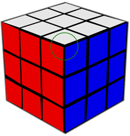

Простые правила сборки кубика Рубика
На этапе обучения при повороте граней кубика старайтесь держать его всё время одной и той же стороной к себе, и одной и той же стороной вверх. Центральные элементы на каждой стороне остаются на своем месте. По ним можно проверять, что кубик не меняет ориентации.
Обозначения
Инструкция по сборке кубика состоит из формул. Формула решает часть алгоритма сборки - меняет местами или поворачивает какие-то элементы, не нарушая положение остальных.
Формула - это последовательность из первых букв слов, обозначающих грани кубика.
Ф ронт (ближняя к вам грань)
В ерх
Л ево
П раво
На этой странице грань Ф обозначена красным цветом. Буква в формуле означает поворот соответствующей грани по часовой стрелке на 90°. Буква со штрихом - поворот против часовой стрелки. Два штриха - поворот на 180°.
В
Буква В без штриха обозначает поворот верхней грани по часовой
стрелке на 90 градусов.
В'
Буква В со штрихом обозначает поворот верхней грани против
часовой стрелки на 90 градусов.
В''
Буква В с двумя штрихами обозначает поворот верхней грани
на 180 градусов.
Три формулы
Формула 1. ВП' В''П ВП' ВП
Для запоминания:
ВП ВП ВП ВП, первый и третий раз П', второй раз В''
2 дальних кубика верхнего креста меняются местами
Формула 2. П'ВЛВ' ПВЛ'В'
Для запоминания:
ПВЛВ ПВЛВ, сначала штрихи по краям, потом на второй паре
Циклически перемещаются 3 ближних угловых кубика верхней грани

Формула 3. Ф'П ФП' нужное число раз
Для запоминания:
Вперёд - вперёд - назад - назад
Поворачивается ближний угловой кубик верхней грани
Формулы надо запомнить. Остальные правила надо понять. По моему опыту, с моей плохой памятью, формулу 3 "вперёд-назад" я не забывал никогда, в формуле ПВЛВ забывал где штрихи, а в формуле ВП забывал порядок букв В и П. В итоге, я выучил самую трудную формулу ПВЛВ, и запомнил, что буквы ВП идут в другом порядке, чем в слове ПВЛВ.
Центральные кубики всегда остаются на месте. Поэтому для сборки одной грани, надо собрать "крест" и угловые кубики того же цвета, что и центр.
Пара угловых кубиков
Порядок сборки
- Нижний крест.
- Два нижних слоя. По очереди собираем 4 пары угловых кубиков.
- Верхний крест по цвету центра.
- Формула 1 для исправления верхнего креста.
- Формула 2 для правильного расположения угловых кубиков верхней грани.
- Формула 3 для поворота углового кубика. Поверните верхнюю грань другим неправильным угловым кубиком к себе. Опять выполните Формулу 3. И т.д. пока вся верхняя грань не станет правильной.
(1)
Нижний крест
(2)
2 нижних слоя
(3)
Верхний крест собран
(4)
Верхний крест исправлен
(5)
Угловые кубики собраны
(6)
Угловые кубики исправлены
Удобно собирать нужные кубики в верхнем слое, следя за сохранностью уже собранных двух нижних слоёв:
- Поворот, например П. При этом пара кубиков одного угла поднимается в верхний слой
- Поворот верхней грани В или В' или В''
- Обратный поворот П'
После этого нижний крест и один из нижних углов полностью восстанавливаются. Пара кубиков, которую вы подняли наверх, должна быть или ещё не собранной (тогда и не жалко), или должна оставаться неразлучной парой при дальнейших манипуляциях, пока вы не вернёте их на место после достижения очередной цели.
Желаю успехов! После нескольких часов учебы вы сможете собирать кубик Рубика за пару минут.
2012-06